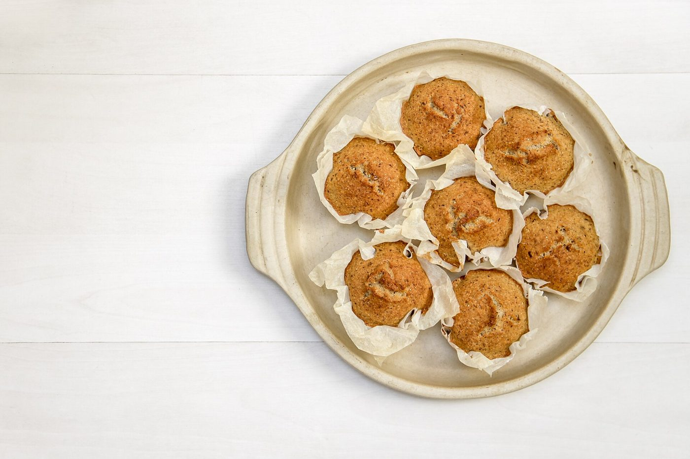
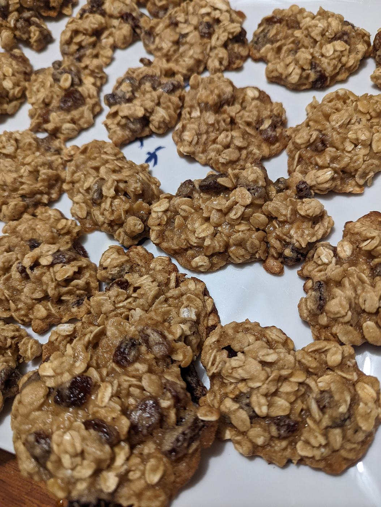
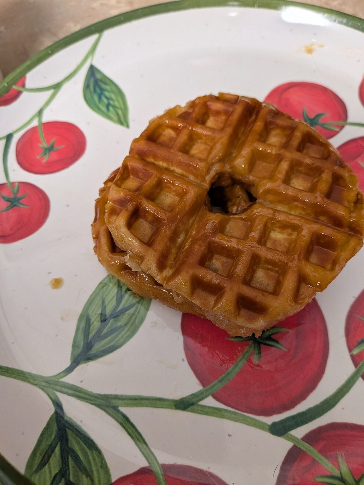
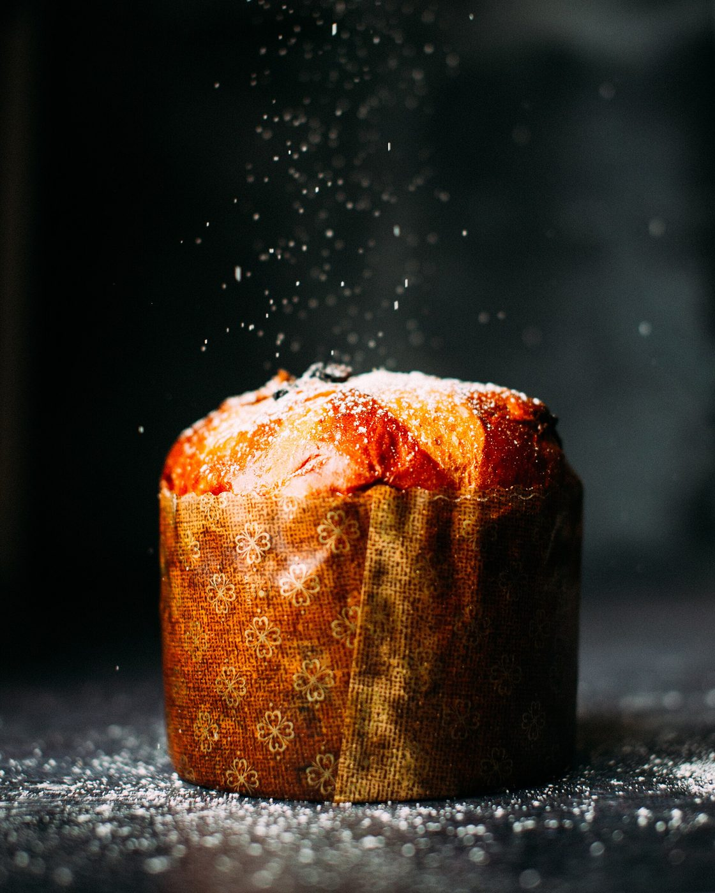
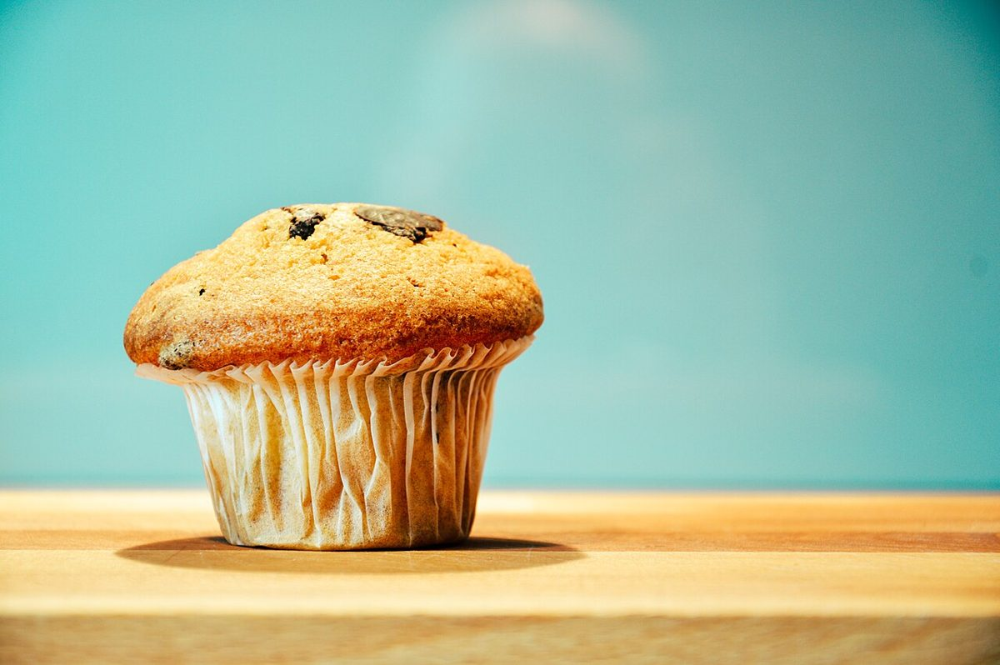
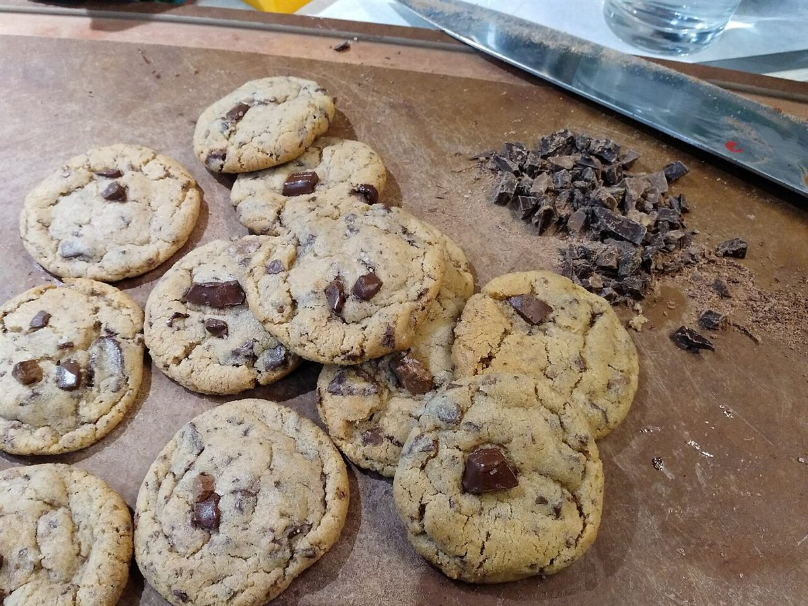
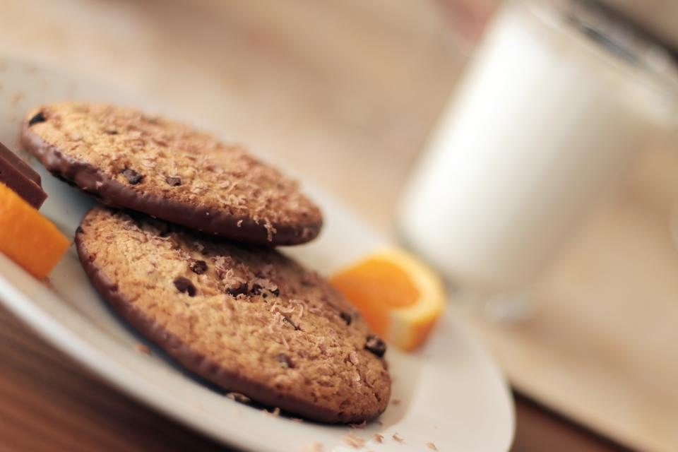
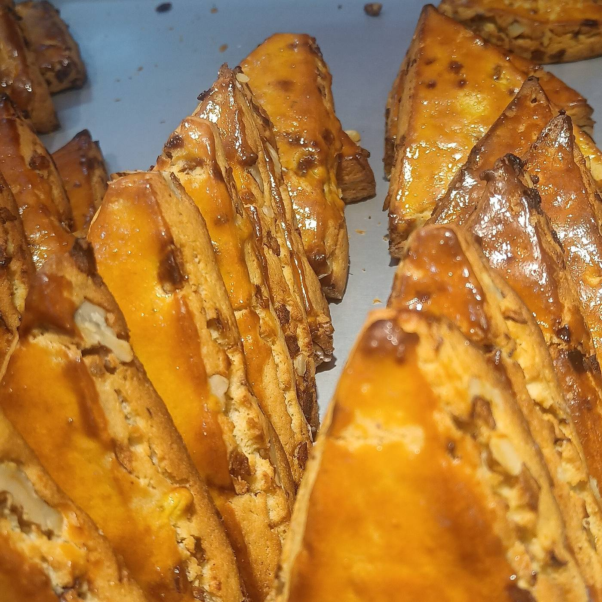

ABOUT
お店のこと
お店の名前「bel tempo(ベルテンポ)」は、イタリア語で「良い天気」を表す言葉だと、取材記事で紹介されています。
「どんな時でもおやつを食べて元気になってもらえたら」という願いが込められている、と紹介されています。
国産の小麦ときび砂糖、魚津の卵や果物など、できるだけ国産・地元の材料を使ったおやつづくりを目指していると伝えられています。毎日食べたくなる、身体にやさしいおやつ。お客様との会話を大切にする、地域に根ざしたおやつ屋さんです。
2018年9月に魚津市中央通り商店街でオープンしたと紹介されています。
上記は新聞・ウェブ記事の紹介内容によります。このサイトは制作側の試作サンプルで、店の公式の文章ではありません。

SWEETS
おやつ
記事などで、ドーナツ、マフィン、クッキーなどの焼き菓子が紹介されています。下の写真はフリー素材のイメージで、実際の商品ではありません。内容・価格・販売日は変わることがあるため、最新はInstagramでご確認ください。

ドーナツ
イメージ写真

マフィン
イメージ写真

クッキー
イメージ写真

焼き菓子
イメージ写真
| 価格 | 準備中 |
|---|---|
| メニュー詳細 | 準備中 |








VOICE
口コミ(イメージ例)
以下は制作側が作った例で、実在のお客様の声ではありません。
イメージ例
ドーナツがやさしい甘さで、ついもう一つ手が伸びました。
来店のお客様(イメージ)
イメージ例
焼き菓子は、子どものおやつに選びやすい素朴な味わいを想像しています。
ご家族でのご利用(イメージ)
イメージ例
商店街をおさんぽするついでに、お土産を選ぶのが楽しい時間です。
散歩の途中のお客様(イメージ)